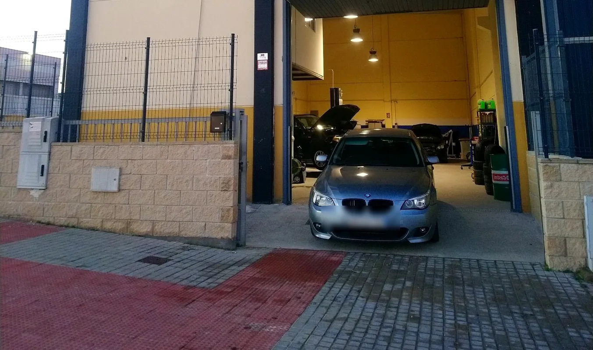
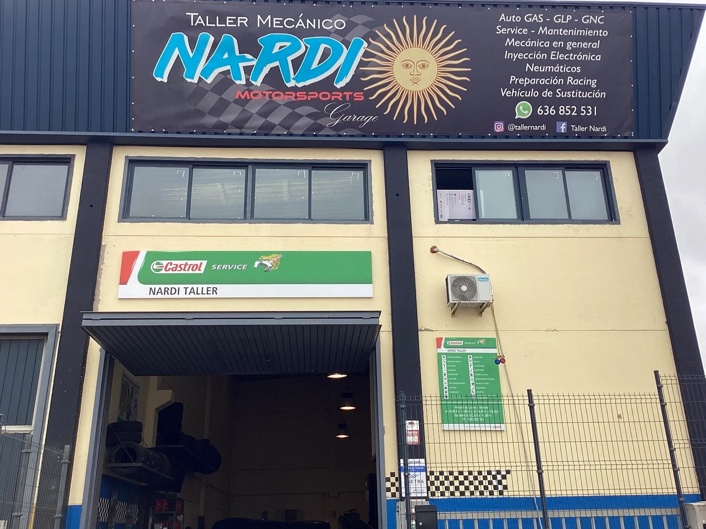
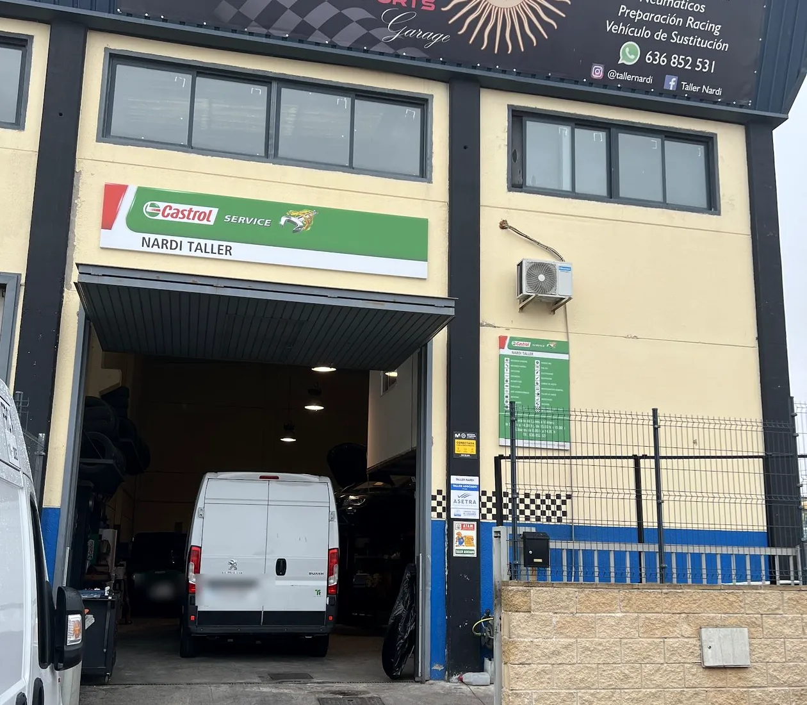
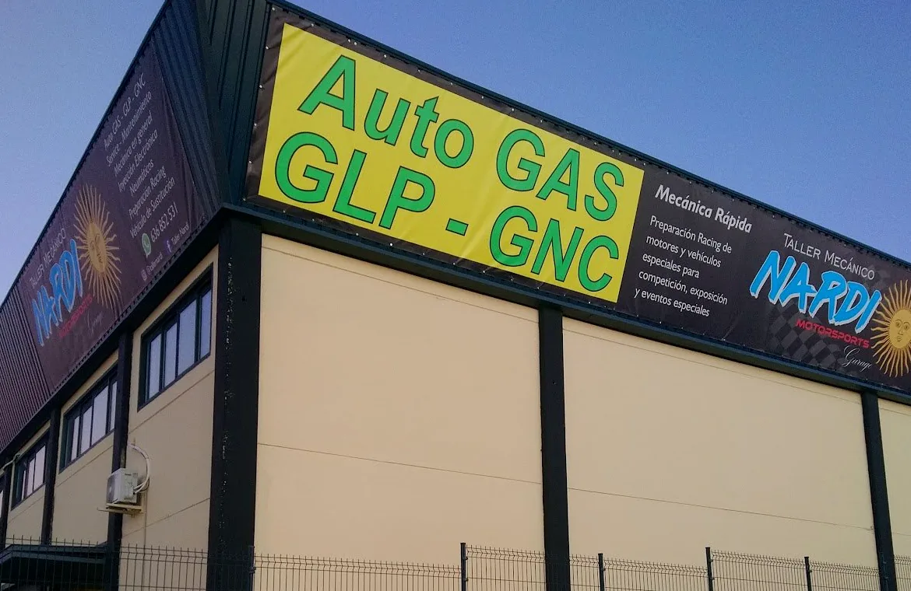
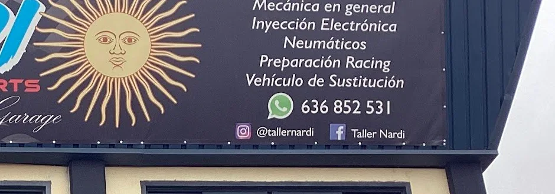
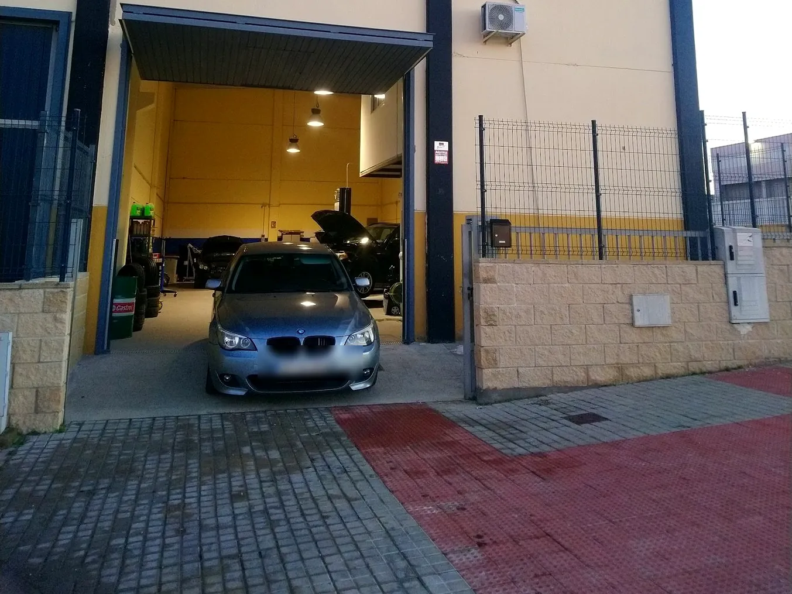
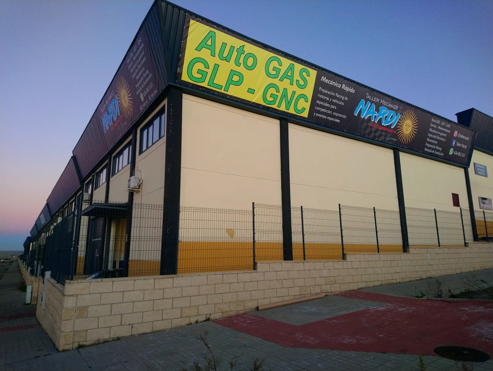
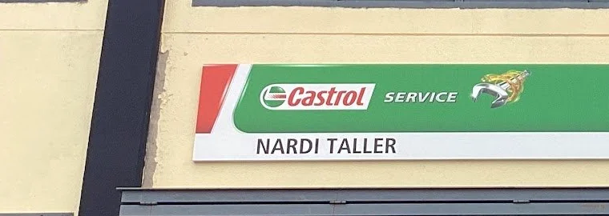
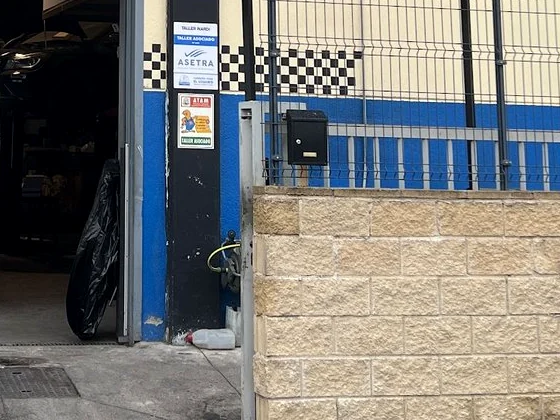
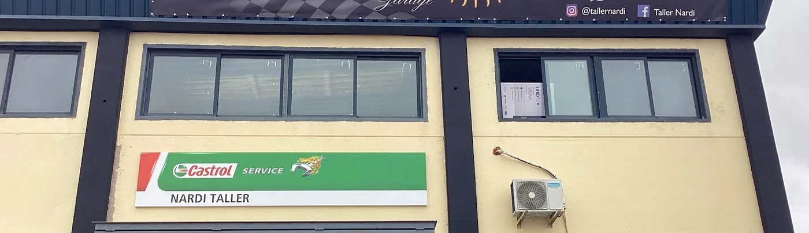

01
Mecánica en general
Reparación y mantenimiento del motor, distribución, embrague y transmisión, en coches de todas las marcas.

Taller mecánico · Valdemoro · Madrid
Mecánica general, inyección electrónica, electricidad, mantenimiento Castrol Service, instalación y adaptación de GLP y GNC, y preparación racing de motores. Aquí hablas siempre con quien toca tu coche: te lo explica, te lo presupuesta y te lo arregla.
Cargando horario…

Castrol Service · Nardi Taller
Servicios
Esta es la lista que anuncia nuestro propio taller en la fachada y en la puerta, sin promesas que no podamos cumplir. Si dudas de si nos toca a nosotros o a un especialista, escríbenos y te lo decimos claro.
01
Reparación y mantenimiento del motor, distribución, embrague y transmisión, en coches de todas las marcas.
02
Revisión por kilometraje o por tiempo, con aceite, filtros y los puntos que de verdad hay que mirar.
03
Cambio de aceite de motor y de caja de cambios, con filtros, niveles y revisión de fugas.
04
Averías de inyección y encendido, gasolina y diésel, localizadas con equipo de diagnosis de taller.
05
Batería, alternador, motor de arranque y electrónica del vehículo, con lectura de centralitas.
06
Cambio y montaje, equilibrado y detección del desgaste irregular y de la causa que lo provoca.
07
Discos, pastillas, latiguillos y líquido de frenos, con revisión completa del sistema de frenado.
08
Suspensión y transmisión: diagnosis, sustitución y puesta a punto.
09
Carga de gas, búsqueda de fugas y funcionamiento del circuito de clima.
10
Repaso de los puntos que mira la ITV para que vayas a pasar la inspección con el trabajo ya hecho.
→
Cuéntanos qué le pasa al coche y te decimos cuándo traerlo y qué vamos a mirar.
Escribir ahora→
Somos taller de GLP y GNC. Pregúntanos si tu coche se puede adaptar y qué implica.
Ver Auto GAS
En la puerta del taller está escrito lo que hacemos, y en la fachada el horario y el teléfono. Sin sorpresas y sin listas imposibles: lo que se anuncia es lo que se hace.
Auto GAS · GLP y GNC
En el taller instalamos y adaptamos vehículos para circular con gas: GLP (gas licuado del petróleo) y GNC (gas natural comprimido). Es uno de los trabajos que más nos piden en Valdemoro y lo hacemos aquí, no lo mandamos fuera.

Castrol Service
Nardi es uno de los talleres Castrol Service de la zona: el programa de servicio y mantenimiento con lubricantes Castrol, aplicado por un taller de barrio donde te conocen por tu nombre.
Castrol Service Taller asociado ASETRA Vehículo de sustitución Valdemoro · 28341
Nardi Motorsports
Además del taller del día a día, en Nardi preparan motores y vehículos especiales. Si tu coche no es para ir a comprar el pan, aquí es donde se prepara.
«Preparación Racing de motores y vehículos especiales para competición, exposición y eventos especiales.»

El taller
Nardi es un taller mecánico de Valdemoro, en la Vereda de la Solana, con Martín al frente. Aquí no pasas por la puerta de nadie: entras, te explican lo que tiene el coche y se hace lo que de verdad hace falta.
Nardi Garage




Reseñas
«Que decir de este taller y el profesional que tiene al mando, Martín. Te lo explica, asesora y recomienda con franqueza. Sobradamente recomendable.»Reseña en Google
«Les dejo el coche con total garantía sabiendo que se queda en buenas manos y que el trabajo es siempre de 10. Te explican lo que le pasa y cómo hay que hacerlo.»Reseña en Google
«Siempre aconsejando de la mejor manera para cuidar tu coche y tu bolsillo.»Reseña en Google
Reseñas publicadas por clientes en la ficha de Google del taller.

Contacto
Llama o mándanos un WhatsApp con lo que le pasa al coche. Te decimos cuándo traerlo y qué vamos a mirar. Estamos en Valdemoro, a un paso de la A-4 y del centro.
C. Vereda de la Solana, 22
28341 Valdemoro, Madrid
| Horario del taller | |
|---|---|
| Lunes | 8:00–17:00 |
| Martes | 8:00–17:00 |
| Miércoles | 8:00–17:00 |
| Jueves | 8:00–17:00 |
| Viernes | 8:00–17:00 |
| Sábado | Cerrado |
| Domingo | Cerrado |
Cargando…
C. Vereda de la Solana, 22 · 28341 Valdemoro (Madrid). Taller con puerta a la calle.
Abrir en Google MapsSe abre tu WhatsApp con el mensaje ya escrito. No guardamos tus datos en esta página.
¿Prefieres hablar directamente?
Llamar al taller · 636 85 25 31Lunes a viernes de 8:00 a 17:00, sin cerrar a mediodía. Si te escribimos por WhatsApp, te contestamos dentro del horario del taller.